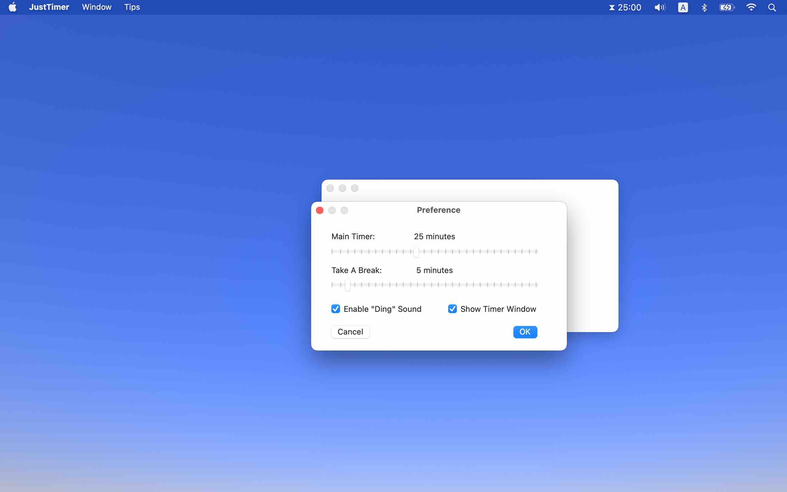

JustTimer
JustTimer
If you have any question regarding this "JustTimer" app, please email me.
Click the "start" button, or press the space key, to start the countdown

Click the "stop" button, or press the space key, to pause/stop the countdown

Click the "continue" button, or press the space key, to continue the countdown
Click the "reset" button, or press the enter key, to reset the timer

In the menu bar, click JustTimer -> Preference, to customize your countdown timer.

You can select "show on status bar", to show a tiny hourglass on the status bar on the top of your screen.
You can also select "on status bar only", to close the timer window and use only the hourglass on the status bar.
Note that the "space" and "enter" key also apply to the status bar hourglass when you activate JustTimer.